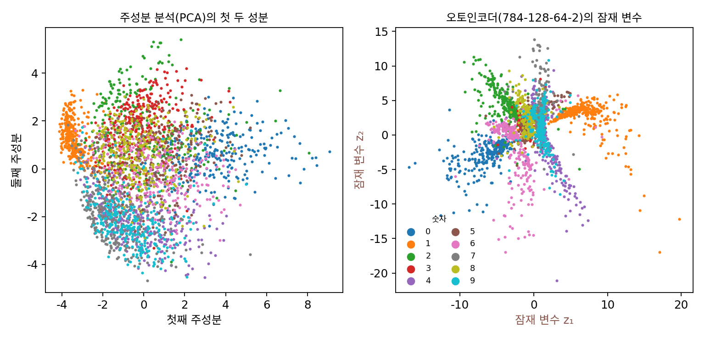

오토인코더: 그림 자신을 정답으로 삼기
라벨을 넣은 MLP가 평균을 그린 것은 라벨 「3」이 그림을 정하기에 너무 적은 정보라서였다. 같은 라벨 아래 6,131가지 3이 있었다. 그렇다면 입력에 정보를 더 주면 어떨까? 획의 기울기, 굵기, 고리의 크기까지 알려 주면 정답은 점점 하나로 좁아진다. 끝까지 가면 입력이 그림 자체다. 그림을 넣고 같은 그림을 맞히라면 정답은 정확히 하나다. 그대로 두면 받은 것을 그대로 내보내는 지루한 함수가 되지만, 가운데를 좁은 목으로 조이면 이야기가 달라진다.
역사: 주성분 분석의 손을 떠나
그림처럼 칸이 많은 데이터를 몇 개의 숫자로 줄이는 일은 오래전부터 주성분 분석(PCA)이 맡았다. 데이터가 가장 크게 퍼진 방향 몇 개를 찾아, 그 방향의 좌표만 남기는 방법이다. 줄이는 법이 직선(선형)이라 계산은 깔끔하지만, 손글씨처럼 굽은 모양의 차이는 잘 담지 못한다.
신경망으로 줄였다 되살리는 생각은 그 전에도 있었지만, 층이 많은 신경망은 잘 학습되지 않았다. 힌턴(Geoffrey Hinton)과 살라후트디노프(Ruslan Salakhutdinov)는 2006년 《사이언스》 논문에서 그 어려움을 이렇게 적었다. 처음 가중치가 크면 나쁜 자리에 빠지고, 작으면 앞쪽 층의 기울기가 너무 작아 학습이 되지 않는다. 무작위로 그린 곡선 그림을 784-400-200-100-50-25-6 신경망으로 줄였다 되살리게 했더니, 미리 학습 없이 바로 학습시킨 신경망은 오래 다듬어도 「언제나 학습 데이터의 평균을 되살렸다」고 한다. 두 사람은 층을 하나씩 미리 학습시켜 좋은 출발점을 만든 뒤 전체를 역전파로 다듬었고, 784-1000-500-250-30 신경망이 MNIST 그림을 30개의 숫자로 줄였다가 PCA보다 훨씬 잘 되살렸다. 가운데를 2칸으로 줄인 신경망의 숫자 두 개를 평면에 찍자 숫자마다 무리가 갈라져, PCA의 첫 두 성분보다 뚜렷한 지도가 나왔다.

이 장의 신경망은 층이 몇 개 안 되고 ReLU 와 Adam 최적화기를 써서, 미리 학습 없이 처음부터 바로 학습했다.
줄였다 되살리기
784칸 그림을 받아 784 → 128 → 64 → 2로 줄이는 MLP와, 2칸을 받아 2 → 64 → 128 → 784로 키우는 MLP를 이어 붙인다. 앞쪽을 인코더 (그림을 짧은 숫자로 바꾸는 쪽 / encoder), 뒤쪽을 디코더 (숫자를 그림으로 되돌리는 쪽 / decoder)라 부른다. 둘을 하나로 묶어 입력 그림과 출력 그림의 제곱 오차를 줄이도록 함께 학습한다. 가운데 2칸은 잠재 변수 (그림을 정하는 숨은 값 / latent variable)라 한다. 그림에 직접 보이지는 않지만 그림을 정하는 값이라는 뜻이다. 논문에서는 코드(code)라고도 부르는데, 프로그램 코드와 섞이므로 이 책은 잠재 변수라고 쓴다.
이렇게 그림을 숫자 몇 개로 줄였다가 자기 자신으로 되살리도록 배우는 신경망을 오토인코더 (줄였다 되살리는 신경망 / autoencoder)라 한다. 앞머리 auto- 는 「자동」이 아니라 「자기 자신」이라는 뜻이다. 따로 붙인 정답 없이 입력 그림 자기 자신을 정답으로 삼아, 입력을 자기 자신으로 되살리도록 배운다는 이름이다.
시험 그림에서 제곱 오차(784칸 합)를 재면, 학습 그림의 평균 그림 하나로 모든 그림을 대신했을 때 52.90, 잠재 변수가 2칸인 오토인코더는 30.09, 16칸이면 8.87이다. 숫자 두 개만으로도 평균 그림보다 43% 적게 틀린다. 위 그림의 오른쪽이 그 2칸 잠재 변수의 지도다. 같은 숫자는 같은 무리로 모였고, 무리들은 원점에서 사방으로 뻗었다. 가로는 −19.0 ~ 24.4, 세로는 −25.5 ~ 16.5까지 퍼져 있다.
ML에서: 줄인 칸에서 일하기
오토인코더의 잠재 변수는 그림보다 훨씬 짧은데도 그림을 되살릴 만큼의 정보를 담는다. 그래서 큰 그림을 다루는 모델들이 그림 대신 이런 줄인 칸에서 일하곤 한다. 계산은 줄인 칸에서 하고, 마지막에만 디코더로 그림을 되살린다. 오늘의 그림 생성 모델도 이 방식을 쓰는데, 그때 쓰는 압축기가 이 장의 끝에서 만날 모델의 후손이다.
문제 4. 단체 티셔츠 주문
동아리 단체 티셔츠를 맞춘다. 가게는 사이즈 번호 하나(1 = S, 2 = M, 3 = L, 4 = XL)만 받고, 번호마다 가슴둘레와 총장(cm)이 표로 정해져 있다: S (96, 68), M (100, 70), L (104, 72), XL (108, 74). 부원의 몸에 맞는 치수가 (101, 73)이다. (가) 이 부원의 치수를 번호 하나로 줄여 전하고 가게가 표대로 되살리면, 번호마다 두 치수의 제곱 오차 합은 얼마인가? 어느 번호를 골라야 하는가? (나) 가게에 「2.5번」이라고 전하면 무엇을 받는가?

가슴둘레가 101이니까 M(100)이 제일 가까워요. M이요.

제곱 오차 합을 번호마다 계산해 봐요.
S는 5² + 5² = 50, M은 1² + 3² = 10, L은 3² + 1² = 10, XL은 7² + 1² = 50이에요. 어, M과 L이 똑같이 10이에요. 가슴은 M이 맞고 총장은 L이 맞아서요.

숫자 두 개를 하나로 줄였으니 어딘가는 잃어. 표가 가슴과 총장이 같이 커지는 사람에 맞춰져 있어서, 가슴은 작고 키가 큰 사람은 어느 번호로도 정확히 못 돌아와.

(나)는요?
표에 2.5번이 없으니까… 가게가 M과 L을 반씩 섞어서 (102, 71)로 만들어 준다면 오차가 1² + 2² = 5라서 오히려 더 좋은데요?

그건 가게가 「번호 사이는 이웃 번호를 섞는다」고 정해 두었을 때 얘기야. 표에 없는 번호를 받았을 때 무엇을 줄지는 가게 마음이고, 우리는 몰라. 사이즈는 한 줄로 커지니까 섞어도 그럴듯하지만, 줄인 칸이 그렇게 생겼다는 보장은 없어.
오토인코더의 잠재 변수와 디코더가 꼭 이 번호와 표예요. 학습한 그림들의 잠재 변수에서는 잘 되살리지만, 아무도 쓴 적 없는 잠재 변수를 넣으면 무엇이 나올지는 학습이 정해 주지 않았어요.
조교님이 「채점 기준표에 없는 답은 알아서 판단한다」고 하셨던 게 무서운 말이었네요.
문제 5. 잠재 변수를 열 배로 늘려도
잠재 변수가 2칸인 오토인코더에서, 인코더의 마지막 층 출력에 10을 곱하고 디코더의 첫 층 가중치를 10으로 나눈다(치우침은 그대로). (가) 되살린 그림은 바뀌는가? (나) 잠재 변수 지도는 어떻게 바뀌는가? (다) 「잠재 변수 (1, 1)을 넣으면 무엇이 나오나」라는 물음에는 학습 전에 답이 정해져 있었는가?
디코더 첫 층은 Wz + b니까 (W/10)(10z) + b = Wz + b예요. 뒤는 그대로니까 되살린 그림도 그대로예요.
코드로 해 봤어요. 시험 그림 만 장을 되살린 밝기가 원래와 가장 크게 달라도 1.8 × 10⁻⁶이에요. 컴퓨터 반올림만큼이요. 손실도 똑같고요.
그럼 지도는요?

열 배로 커져요. 가로가 −190부터 244까지요. 그런데 손실이 똑같으니까 학습은 둘 중 어느 쪽이 더 좋다고 할 수 없겠네요.

늘리기만이 아니라 돌리거나 굽혀도 마찬가지야. 인코더 끝에 거꾸로 되돌릴 수 있는 변환을 아무거나 넣고 디코더 앞에 그 반대를 넣으면 손실이 그대로니까. 손실은 「잠재 변수에서 그림으로 돌아올 수 있는가」만 보지, 「잠재 변수가 어디에 놓이는가」는 전혀 보지 않아.

그래서 (다)의 답은 「아니요」예요. 잠재 변수 (1, 1)은 어떤 모델에서는 무리 한가운데고, 어떤 모델에서는 아무도 없는 들판이에요.
선형대수에서 기저를 바꾸면 좌표는 바뀌어도 벡터는 그대로인 것처럼, 잠재 변수의 좌표 자체에는 뜻이 없네요.
문제 6. 잠재 변수를 아무 데서나 뽑으면
위젯 1의 오토인코더에서 새 그림을 얻으려고 잠재 변수를 무작위로 뽑는다. 두 가지 방법을 쓴다: (ㄱ) 표준정규분포 N(0, I)(평균 0, 칸마다 표준편차 1)에서 뽑기, (ㄴ) 시험 그림의 잠재 변수를 모두 감싸는 직사각형 안에서 고르게 뽑기. 되살린 그림을 손글씨 숫자 MLP 분류기(784-256-256-10, 시험 정확도 97.59%)에 넣고, 어느 숫자 하나에 90% 넘게 확신하는 그림의 비율과 분류된 숫자의 비율을 본다. (가) 어느 방법이 더 나을 것 같은가? (나) 실제로 각각 1만 개를 뽑은 결과를 보고 무엇이 문제인지 말하라. (위젯 1의 「9개 뽑기」 두 단추로 먼저 눈으로 확인해 보자.)
정규분포가 낫겠죠. 잠재 변수가 원점 근처에 많이 모여 있으니까요.
뽑아 봐요.

(ㄱ)은 분류기가 90% 넘게 확신하는 그림이 39.4%예요. 시험 그림은 94.8%인데요. 위젯에서 보면 원점 근처는 여러 숫자의 무리가 겹쳐 있어서 숫자인지 뭔지 모를 얼룩이 많이 나와요.
(ㄴ)은 확신 비율이 87.3%야. 이게 더 좋은데?
확신한 그림들이 무슨 숫자인지도 봐요.
1이 31.7%, 0이 21.6%예요. 3은 0.3%, 9는 1.0%뿐이고요. 시험 그림은 숫자마다 10% 안팎인데. 상자가 넓어서 대부분 무리 바깥 들판을 뽑았고, 들판에서는 가까운 무리 끝의 모양을 길게 늘인 굵은 0이나 1이 나와요. 확신은 하는데 고르게 나오지 않아요.

하나는 무리가 겹친 가운데를 뽑아서 망하고, 하나는 들판을 뽑아서 한쪽으로 쏠리고. 둘 다 「어디서 뽑아야 하는지」를 모르는 거네요. 시험 그림의 잠재 변수 가운데 원점에서 3 안쪽에 있는 게 33.6%뿐인데 상자 넓이는 1,824나 되니까요.
맞아요. 잠재 변수를 열 배로 늘려도 손실이 같았던 것처럼, 학습은 잠재 변수가 어디에 놓일지 정해 주지 않아요. 그러니 뽑을 곳도 모르는 거예요. 학습할 때부터 「잠재 변수는 여기에 놓여라」를 정해 두면 어떨까요?
확률론 시간에 표본 공간을 정하지 않고 「무작위로 고른다」고 하면 답이 여러 개 나오던 베르트랑의 역설 같아요. 어떤 분포에서 뽑는지부터 정해야 하네요.